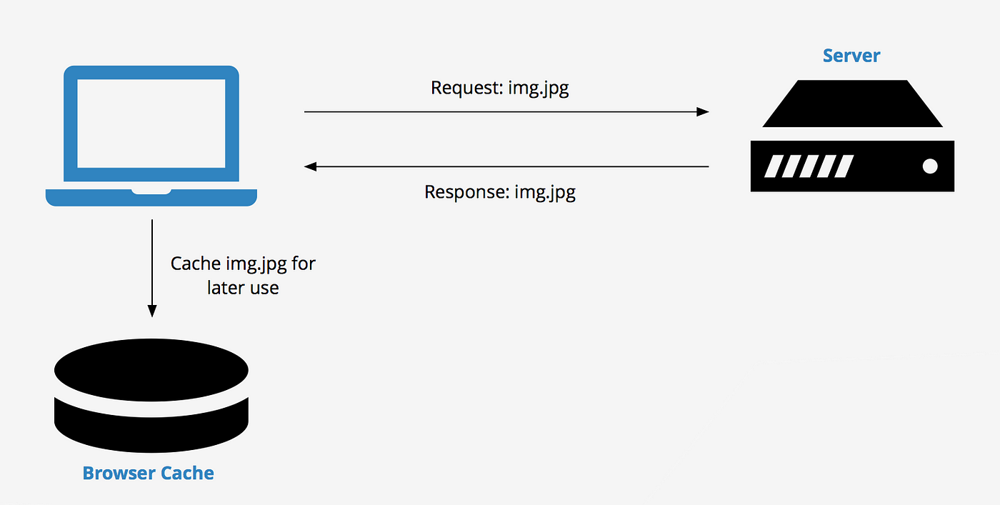

Latest Concepts
Proactive Precaching: Handling Connectivity Loss
In modern web development, it's common for web applications to consume large amounts of data from the server. As a result, network connectivity can become a critical bottleneck, and network requests can result in slow loading times and poor user experiences. One way to mitigate this issue is through client-side caching. Caching involves storing data on the client-side, allowing subsequent requests to retrieve the data from the cache instead of making additional server requests. This technique can significantly improve the performance and responsiveness of web applications, particularly when dealing with data that changes infrequently.